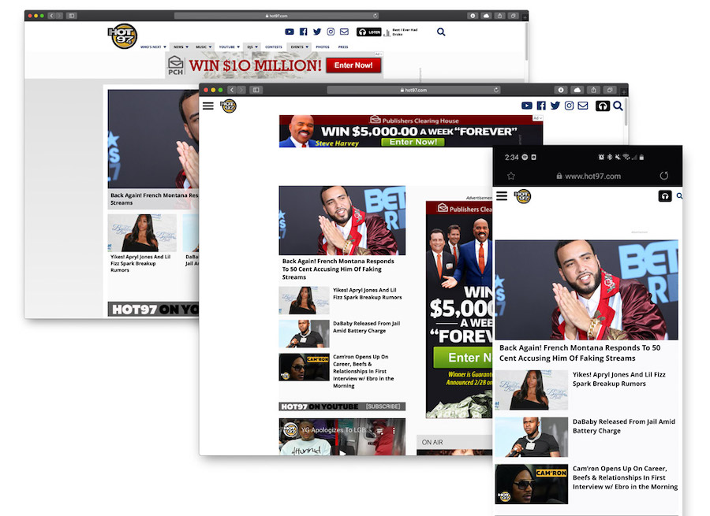

In my second term in school, we were again tasked with redesign another website. This time, we needed to redesign the a news-based website for all three platforms (desktop, tablet, phone). Being a hip-hop music fan, I decided that I would redesign the Hot 97 radio station website.
With one website redesign under my belt, this process was a lot smoother this time around. However, instead of redesigning the site in Adobe XD, we moved to two new programs, Sketch and Flinto.
The initial process of designing the site is what took the longest this time, as I sketched many different ideas and versions of what direction I might potentially take the design into.

After nailing down on a design, the rest of process was much smoother. Within several days, I already had a high-fidelity prototype of the home page and only had to tweak certain aspects from there on out.
The next challenge was creating the unique interactions for the three breakpoints of the site (desktop, tablet, phone). Our instructor challenged us to create five unique interactions per each breakpoint that had to be different from the each other.
Throughout the process of designing the site, I conducted heuristic reviews to ensure that the design decisions that I was making were the correct ones. I asked ten people to review the original Hot 97 site and my redesigned site and score each respectively. Through this process, I found that the feedback that I was receiving was very useful and it helped guide the rest of the design process.

After adjusting my designs based on feedback that was received from peer reviews, I was able to focus on refining my designs and animations.
Overall, my second term project was very much an extension of my first term. I learned how to adjust interfaces based on screen sizes and what does and doesn't work for certain sizes. I also learned about creating unique animations that enhance the experience of using a site. And finally, I learned how to conduct user-research in a way that directed impacts design decisions.